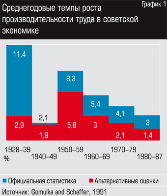
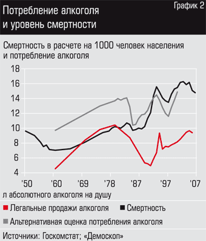
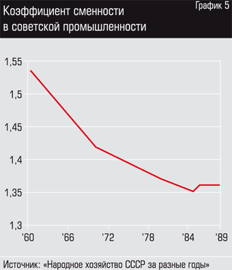

Неструктурированные заметки по теме -- 5
http://lex-kravetski.livejournal.com/279676.html
О невозможности и безблагодатности экономики
Экономики не может быть. Этот тезис доказывался уже неоднократно, однако многие до сих продолжают верить, — а иногда и говорить, — о реальности сего явления, пытаясь выставить его мало что воплотимым в жизнь, но ещё и полезным для людей.
Тем не менее, даже поверхностный анализ даёт понять невоплотимость практически всех экономических тезисов в жизнь. Вот, например, ценообразование. Как может у товара появиться цена? Говорят, в результате сделки: дескать, два человека будут торговаться, покупатель повышать цену, продавец постепенно её снижать, и в какой-то момент они сойдутся к точке устраивающей обоих. Однако в эти рассуждения с самого начала внесено негласное предположение о сходимости такого процесса — конечно, в этом случае он и будет сходиться. В реальности же обе стороны могут упереться как ослы и затормозить тем самым торг. И это ещё простейший случай несостоявшейся сделки — при нём обе стороны хотя бы поймут, что ответа не будет и разойдутся. В общем же случае торг может продолжаться до бесконечности не останавливаясь при этом в стационарной точке. Просто потому что человеку свойственно передумывать. Это только в голой теории покупатель уступает продавцу и соглашается поднять свою ставку. В реальности же известны случаи, когда покупатель несколько раз подняв ставку передумывал и снижал её обратно. Продавец ровно так же может не только понижать цену, но и повышать её. И откуда же вдруг следует, что сей процесс сойдётся к некоторой точке? Ниоткуда. Это — голая теория. Очевидно же: ценообразование в результате торга — бред и блеф. Такая система нежизнеспособна.
Ну ладно, — говорят верующие в экономику, — есть ещё вариант, когда продавец не торгуется, а просто устанавливает цену такой, чтобы получить наибольшую прибыль. Да, но как он узнаёт о цене, наибольшую прибыль приносящую? Обычно отвечают: продавец посмотрит график зависимости количества покупателей от цены и найдёт на нём оптимум. То есть, подразумевается, что ему этот график спустили с Небес — заверенный подписью Бога-Отца лично. Однако я ни разу не видел подписи Бога-Отца, да и графики мне встречались исключительно на страницах книг про экономику, но никак не в реальности. Подумайте сами, чтобы получить такой график, надо продать товар за все возможные цены. При этом для различения того самого искомого количества покупателей в разных точках, продать следует не один экземпляр товара, а тысячи. Кто-нибудь делал такое? Кто-нибудь хоть одну разновидность товара за все возможные цены продавал? Нет. А раз так, нет и никакого графика, кроме как на страницах учебников и в мечтах адептов экономики.
На эксперименте его не строили, значит, а построить его из общих соображений невозможно. Это будет не реально существующая зависимость, а просто фантазия построителя. Однако на секунду предположим, что откуда-то такой график всё-таки взялся. Ну там, Бог-Отец его всё-таки спустил с Небес своему любимцу из числа верующих в Него и в Экономику. Есть график, значит, и что же? Как из сферического вакуума всё это перенести в реальность? В реальности-то не ты один будешь этот продукт продавать. Кругом же конкуренция. Адепты экономики сами же ведь говорили, что в их так называемой экономике наличествует конкуренция? Часть покупателей согласно этому же графику от продавца смоются к его соседу, который продаёт дешевле. Вот. И что же дал продавцу этот график? За какую цену продавать следует? Снова как-то вычислим, да? Очень, очень оптимистичный подход. Положим, вы открыли чудо-алгоритм проверки данной цены на состоятельность — способ вычисления некой целевой функции, оценивающей доход при этой цене. Открыли вы его снова не без помощи Бога-Отца, поскольку на фоне сложности экспериментального построения такового алгоритма даже чуть раньше спущенный с небес вам график кажется очевидным. Но как найти ту самую точку?
Ведь вам надо для каждого экземпляра товара проверить все цены от нуля до суммарного количества денег на планете!!!
Суммарное количество денег на планете можно с некоторой степенью достоверности оценить по ВВП планеты. Так вот, ВВП планеты — порядка 70 миллионов миллионов долларов. Я не опечатался, не написал случайно «миллион» два раза, нет. 7*1013. И это долларов, ребята. В центах же — семь на десять в пятнадцатой. Даже если оценка в каждой точке требует десяти операций, то вам придётся для обнаружения искомой цены произвести порядка десяти в семнадцатой степени операций! И это только для одного экземпляра. Видов же товаров (не экземпляров — видов!) выпускают многие миллионы. И в день — сотни миллионов экземпляров каждого вида. Но кому, кому под силу вычислить ту самую «оптимальную» цену даже хотя бы для одной единственной разновидности продукта? Про «в уме» я даже и не говорю. На компьютере-то такое займёт столетия. Даже если все компьютеры планеты объединить в один мега-компьютер, то и тогда даже не удастся рассчитать эту саму цену даже для пары сотен товаров. Что уж и говорить о каких-то там расчётах мелкими предпринимателями. На одном компьютере, ага.
Да и пусть даже вдруг чудом удастся — время-то идёт. То, что в данный момент времени у вас купили бы вот столько товаров за вот такую цену, не значит покупки аналогичного же их числа через неделю. Даже через час не значит. Расчёт занимает столетия, вам же надо получать результат ежеминутно.
Откуда вы вообще узнаете, купят ли ваш товар? Сделали вы десять стульев, продали восемь, сколько делать дальше? Восемь? Так, быть может, через неделю купили бы тысячу? Или ноль? Из проданных восьми стульев никак не следует, что и дальше тоже будет продано восемь, а не тысяча и не ноль. Более того, у вас нет никакого способа узнать, сколько будет продано, кроме как произвести бесконечное их количество и попытаться продать. Но возможно ли такое? Было бы возможно — понадобилась ли вам бы экономика вообще?
Таким образом, производитель в принципе не может узнать, сколько продукта ему производить. И это ещё всё только навскидку. Сколько надо платить работникам? Вычислить в результате торгов? Ха-ха. В общем случае процесс-то не сходится. Отследить по кривой? Ну, как Бог-Отец вам зашлёт график, дайте мне знать. Сколько производить? За сколько продавать? Сколько денег откладывать, а сколько пускать в оборот? За сколько покупать станки? Сколько станков нужно? Слишком много вопросов, господа. И каждый из них требует столетия на ответ, хотя ответ требуется каждую минуту.
При наличии же конкурентов количество вопросов увеличивается ещё на порядок. С тем же результатом: полная непредсказуемость, делающая невозможной любые попытки вычислить цену, количество и всё остальное.
И это мы пока не рассмотрели непредсказуемые природные явления — цунами, ураганы, землетрясения. Если к непредсказуемости желаний людей добавить ещё и непредсказуемость природы, то количество требующих предусмотрения факторов возрастает до совсем уж беспредельных величин. Мало, что вы не можете быть уверенным в желании сегодняшнего покупателя и назавтра придти к вам за тем же продуктом, так его вдобавок ещё может сбить машина. Уж чего-чего, а это вам точно не удастся предусмотреть.
Вам ещё не очевидна невозможность экономики? Хорошо, я продолжу. Возьмём этот самый пресловутый компьютер. Как продукт возьмём. Этот продукт состоит из монитора, клавиатуры, процессора, материнской платы, видеокарты, мыши, жёсткого диска и ДВД-рома. На материнской плате куча микросхем, конденсаторов, сопротивлений, разъёмов и лампочек. В ДВД-роме, кроме того, лазер. В жестком диске — целый набор механизмов. Материнская плата сделана из кремния, клавиатура — из пластмассы, а колонки из дерева. Динамики колонок, не исключено, из бумаги. Кроме того, в проводах медь. В ЭЛТ-мониторе — стекло. Одних только природных материалов задействовано несколько десятков. А уж технологический процесс изготовления каждой детали настолько огромен, что вряд ли хоть один человек на планете способен не то что проделать его целиком, но и просто удержать в голове. Каждой детали! А их там многие сотни. Мыслимо ли, чтобы в результате неких экономических взаимодействий все эти элементы собрались бы в единое целое за срок, меньший времени жизни нашей галактики? Мыслимо ли, чтобы ко всему этому ещё подвелось электричество, процесс производства которого ещё более сложный? Мыслимо ли, чтобы к этому ещё и написался софт? Да не человек, всё человечество в сумме вряд ли способно просто сохранить всю совокупность этих процессов в памяти. Вероятность же организации производственной цепочки всего этого при помощи экономических механизмов стремится к нулю. Действительно, из некоторого Центра процесс строиться не может — в силу невозможности удержания этого процесса в голове, при попытке же построить процесс как результат миллионов сделок разных звеньев производственной цепи мы неминуемо натолкнёмся на стремящуюся к единице вероятность разрыва цепи хоть где-нибудь. А ну как не договорятся между собой добывающий медь шахтёр и рабочий, производящий из этой меди провода? Вероятность такого есть? Есть. И немалая. А таких звеньев, как уже говорилось, миллионы. То есть, уже и так немалая вероятность становится огромной. При этом, разрыв хотя бы одного из звеньев сделает появление компьютера невозможным. Ну и уж совершенно невозможно поделить вырученные за продажу компьютера деньги — ведь совершенно непонятно, кто сколько труда в его производство вложил.
Экономика нереальна. Признайте, вы просто тупо верите в экономику и всё тут. Вам показывают какие-то там цифры, призванные доказать, что экономика работает. ВВП США. Ха-ха. Какое-то число. Вам его показали — вы поверили в экономику. Ну а какое число вам надо показать, чтобы вы решили, что ни фига никакой экономики нет? Правильно, никакое. Существование экономики — нефальсифицируемая теория. Любое число будет означать, что экономика есть. Триллион, сикстиллион, десять, сто — как ни крути, всё подходит.
Хотя вам происхождение этих чисел даже неизвестно. Вы просто видите их на каких-то сайтах. А я, вот, лично наблюдал бухгалтера, выдумывающего числа для отчёта. Где гарантия, что и число, выдаваемое за ВВП США, просто кто-то не выдумал, чтобы вас одурачить? Такой гарантии нет. Следовательно, ваше отношение к этому числу — исключительно вопрос веры. Одни верят в Бога, другие — в ВВП США и существование экономики. Одни священной книгой почитают Библию, другие — Экономикс или Капитал. Хотя и то и другое — всего лишь какие-то книги, содержимое которых проверить в принципе нельзя. Хотя здравый смысл скорее согласится с существованием Бога, чем с существованием экономики. Бог по крайней мере наделён сверхспособностями, что и объясняет его возможности, экономику же относят исключительно к человеческим силам, которых, соврешенно очевидно, не хватает на организацию даже миллионной части декларируемого. Экономика производства одного только компьютера уже потребовала бы сотен лет от всего человечества в сумме, вы же верите, что все продукты и их распространение происходят через экономику. Глупость.
И главное, Бог хотя бы олицетворяет Высокое и Светлое. Что же до экономики, то она — олицетворение Зла. Вторая Мировая Война произошла из-за экономики, это всем известно. Первая Мировая — из-за экономики. Что там вторжение в Ирак — Мировые Войны! Миллионы жертв! Воровство — от экономики. Нищета — от экономики. Коррупция — от экономики. Экономика губит человеческие жизни и целые государства. В Римской Империи была экономика и Римская Империя распалась. В Оттоманской Империи была экономика и Оттоманская Империя распалась. В СССР была экономика и СССР распался. В Австро-Венгерской Империи… продолжать можно до бесконечности. Во Франции была экономика и там гильотинировали десятки тысяч людей. Была экономика и ко власти в результате пришёл Наполеон, заливший Европу кровью. В Германии была экономика и там к власти пришёл Гитлер. Миллионы людей попали в концлагеря и погибли там. А потом была Война…
Куда ни глянь, какое распавшееся государство ни возьми, где бы ни обнаружились тысячи и миллионы жертв, везде была экономика. Связь очевидна: экономика = жертвы и деградация. И это даже при вымышленной экономике! Представьте, какой кошмар бы начался на Земле, будь экономика реальностью.
Если вы не хотите повторения мировых войн, концлагерей и гильотин, отриньте наконец эту вашу веру в экономику. Скажите, наконец: «хватит, экономику мы уже проходили, не надо нам больше». В конце концов, люди знали времена и без экономики как таковой. Раз экономика оказалась такой чудовищной, то следует вернуться к уже проверенным способам — к жизни без неё. Жили ведь без экономики и ничего, не умерли. Поэтому не надо вот так сразу бросаться в непроверенное. Не надо ставить эксперименты на людях. Пусть адепты экономики сначала это дело как-нибудь без людей проверят. А после этого мы с ними уже поговорим.
Это было опубликовано под тегом !"юмор". Однако сказка -- ложь, но в ней намек...
Продукты общества потребителей
Было ли у вас хоть раз ощущение, что вы превращаетесь в скверную пародию на самого себя?..
Возможно, вы видели эту рекламу. Там изображена пригородная улица с богато выглядящими домами и безукоризненного вида газонами. На обочине рядом с одним из таких домов припаркован огромный джип, который, собственно, и рекламируется, но возле остальных домов стоят… танки. Настоящие танки. Большие, смертоносные, бронированные танки.
Эта холодящая кровь реклама призвана напомнить, какими холодными стали наши отношения с окружающими по мере ужесточения потребительского соревнования, этой “войны всех против всех”. С психологической точки зрения реклама намекает на то, что нам необходимо управлять автомобилем не менее мощным, чем танк, чтобы составить конкуренцию всем остальным чудовищным транспортным средствам, которые ездят по улицам. Однако “танк” при этом должен быть высококлассным и комфортабельным.
Конечно, эта реклама – преувеличение. Наши отношения с соседями не так холодны и враждебны. ПОКА не так. Но в воздухе определенно чувствуется какое-то похолодание.
В прошлом социалисты, мы постепенно превращаемся в одиночек. Мы теряем возможность личного соприкосновения. Мы – “гусеницы”, все глубже и глубже заворачивающиеся в свой кокон. Включая обитателей охраняемых квартир с сигнализацией на дверях, жителей домов-комплексов с охранниками на входе, работников офисов с решетками на окнах. “С общественной точки зрения дом-крепость сам навлекает беду на своих жильцов, – говорит дизайнер жилых кварталов Питер Кэлторп. – Чем больше люди погружаются в изоляцию, тем больше им приходится бояться”.
Потреблятство производит одиночество.
Вильгельм Ропке был одним из гигантов традиционной консервативной мысли в экономике. “Homo sapiens consumens теряет из виду все, что составляет человеческое счастье, кроме денег и преобразования их в товары”, – писал Ропке аж в 1957 году. “Тем, кто заражается стремлением «не отставать от Джонсов» в своем образе жизни, – утверждал он, – не хватает истинных, нематериальных по сути условий для простого человеческого счастья. Их жизнь пуста, и они пытаются как-то заполнить эту пустоту”. (об этом же писал и Торстен Веблен, и на мой взгляд – намного интереснее).
“Может быть именно этот страх собственной ненужности в мире ненужных вещей делает наиболее очевидными неестественность и абсурдность большой части того, что в наше время называется работой”, – пишет Стад Теркель в бестселлере “Working”. Может быть, именно чувство, описанное Теркелем, привело к одним из самых печальных в современной статистике результатам: уровень мировой депрессии сегодня существенно превышает тот, который был 50 лет назад.
Потреблятство производит пустоту.
Социальные гарантии находятся в состоянии упадка. Обезумев от потока материальных вещей и не вступая в соприкосновение с атмосферой здорового сообщества, мы смотрим на жизнь как бы со стороны. Спеша на работу, мы видим вереницу бульдозеров, выравнивающих площадку, прежде служившую для семейного отдыха; теперь, скорее всего, там будет торговый центр, ресторан или офисное здание. Но нам нет до этого дела, мы спешим на работу.
Но – вот парадокс! – редко можно услышать, чтобы кто-нибудь оценивал свою работу как призвание. Работа может быть “интересной и творческой” – или “тупой и скучной”. Она может давать общественное положение – или считаться незначительной, безотносительно ее истинной ценности. Работа может приносить большие денежные вознаграждения – а может едва поддерживать наше существование. Но мы почти никогда не спрашиваем, в чем смысл нашей работы и чему она служит.
Для большинства (но, конечно, не для всех нас), если работа приносит деньги, этого достаточно. Зачем делать эту работу? Очень просто. За нее платят.
Потреблятство производит безразличие.
Более 90% девочек-подростков считают шоппинг своим любимым занятием. Менее 10% обозначают в качестве такового “помощь другим людям”. Тридцать лет назад около 70% студентов считали, что “формирование ясной жизненной философии” является важным для них, тогда как меньше 30% говорили то же самое о “зарабатывании большого количества денег”. Сегодня эти цифры поменялись местами.
Любопытно, что все претензии к системе образования, существующей в университетах, сводятся к фразе “Они не учат меня быть машиной для зарабатывания денег”. Однако самой частой фразой, которую можно слышать в разговорах студентов большинства университетов, является “Жесть, как мы бухнули вчера вечером”.
Мы находимся в порочном круге. Систематически предпочитая вещи людям, тем самым мы делаем выбор, который отделяет нас от жизни, становясь причиной еще более интенсивного потребления и еще большего отделения. Но нам все равно. Подобно небольшой рыбе, которая съела маленькую рыбу, мы потребляем продукты, укрывшись за стенами своих домов. А потом беспомощно наблюдаем, как большие рыбы, производящие эти продукты, откусывают огромные куски от наших городов, заглатывая рабочие места, традиции и просто открытое пространство.
Мы надеемся, что кто-то другой позаботится обо всем, и платим за эту заботу, чтобы считать себя вправе сосредоточиться на работе и трате денег. Но, к собственному ужасу, часто мы обнаруживаем, что многие из тех, кто оказывает нам услуги, торгует в розницу, говорит, что заботится о нас – в сущности, о нас уже не заботится. Может быть, более уместно было бы сказать, что они потребляют нас.
Потреблятство производит потреблятство.
И неудивительно, что наши друзья превращаются в знакомых, наши семьи становятся все менее и менее крепкими, а наши дети больше слушают продавцов на рынке, чем своих родителей. Безразличие, одиночество и внутренняя пустота – вот что получаем мы в ответ на то, что стараемся сделать свою жизнь лучше: но не так лучше, как подсказывает нам “моральный закон в себе”, а так, как говорит девушка с рекламы “Herbal Essences”:
“Удовольствие по правилам и без.”
Ну так было ли у вас хоть раз ощущение, что вы превращаетесь в скверную пародию на самого себя?
С уважением, Алексей Глазков.
В тексте использованы материалы книги Граафа “Потреблятство. Болезнь, угрожающая миру”.
Сказ об автопроме и фондовом рынке
Я делаю автомобили. И Вы делаете автомобили.
У нас примерно одинаковые объемы продаж - $1млн. и одинаковая рентабельность - 8% в год, $80K. Вы берете годовую прибыль и добавляете к ней кредит в $1млн. под расширение производства на 25%. И я беру годовую прибыль и добавляю к ней такой же кредит под расширение производства на 25%. Вы вкладываете в производство, за два года его разворачиваете и еще через два года у Вас объем продаж увеличивается на 25%, т.е. продажи растут до $1.25млн., а прибыль до $100K. Итак, за четыре года усирания Вы вместо $320K прибыли заработали всего $100. Еще через одиннадцать лет - т.е. через 15 лет с начала своей операции, Вы выплатите кредит и заработаете $1200K, т.е. столько же, сколько Вы имели бы не суетясь. И только теперь у Вас началась новая жизнь.
А я сделал проще. Я пошел на фондовый рынок, где надували пузырь даткамов. Вложил $1080K своих и заемных денег в акции и снял через два года 200% прибыли. Отдал банку $1160K и у меня осталось $2080 прибыли. На $900K я перекупил у банка Ваш кредит и потребовал у Вас его возвращения. Вернуть Вы не можете - он в деле. Тогда я забираю за долги Вашу компанию и избавляюсь от конкурента. Поскольку мне Ваши авто даром не нужны, то я ее просто пилю на куски и продаю в виде металлолома, а цену на свои авто увеличиваю на 8% - ту самую прибыль, которую раньше получали Вы.
Итак - что мы имеем? В результате таких нехитрых операций деньги из реального бизнеса откачаны, реальное производство ликвидировано, конкуренция уменьшена, цена продукции для потребителя выросла. Вас это устраивает? Нет. Чтобы увернуться от такого будущего, Вы тоже направляете свой кредит и всю прибыль не в развитие бизнеса, а на ФР. И мы начинаем меряться писями уже не в реальном бизнесе, а на ФР - кто загонит в ФР больше прибылей, кредитов, пенсионных страховок работников. Мы начинаем по кускам распродавать собственные заводы, только бы выиграть гонку вооружений на фондовом рынке и не подставиться друг другу. В результате, через 10 лет мы с Вами по шейку в кредитах, но нас это не ипет, потому что у нас хренова туча активов - всяких разных ужасно ценных ипотечных облигаций аж на $10млн.. Мы производим уже в 5 раз меньше авто, причем говеных до ужаса, потому как экономим деньги, чтобы закачать их на ФР. А наш потребитель охренев от нашей пи@нутости покупает себе японские тачки.
Думаете это шутка? Откройте финансовые отчеты General Motors, Ford и Crysler за последние 10 лет и посмотрите. Вы увидите скучное числовое описание того увлекательного процесса, про который я Вам только что рассказал простым русским языком. И Вы будете после этого утверждать, что биржи служат направлению денег в реальную экономику?
Владимир Андреев, Социализм - что мы имели и почему потеряли
Значительной части нашего народа крепко вбили в голову, что социализм, это "совок", "отстой", некачественные товары, очереди и талоны. В целом у многих есть склонность считать, что последние годы горбачевской перестройки это и есть социализм.
Народу внушили, что рыночная экономика эффективна, а плановая - отстой и тупик, ее отдельные достижения базируются лишь на труде зеков.
Но, так ли это на самом деле? Во времена Сталина в Советском Союзе воплотились в жизнь - всеобщее избирательное право, равенство полов, отсутствие препятствий для социальной мобильности (любой независимо от сословия и происхождения мог стать "всем"), отсутствие давления на образование и жизнь феодальных институтов типа церкви. В короткое время 80 миллионов безграмотных крестьян было обучено грамоте, это ли не триумф Просвещения? Московское метро и высотки описывали как чудеса света, великие стройки, по тем временам самые современные, вызывали ощущение сбывшегося фантастического будущего. Рост промышленного производства по своим темпам до сих пор не превзойден ни одной страной мира. Это к вопросу о "неэффективности экономики социализма" - тезису, который успешно внедрен в мозги большинства на Земле и прежде всего в стране, где эта эффективность была продемонстрирована. После войны восхищались японским чудом, сейчас китайским, но всех чудеснее было первое чудо - советское.
В 30-ые годы весь капиталистический мир впадает в депрессию. Выстраиваются огромные очереди безработных, стреляются банкиры, свирепствует туберкулез... А в это время приезжающие из СССР в США туристы смотрят на капиталистический мир свысока: "Какой-то дооктябрьский Елец, аль Конотоп!", "Одноэтажная Америка".
Наоборот, те, кто побывал в России, или хорошо был знаком с тем, что там происходило, рассказывали удивительные вещи. Г. Уэллс и Б. Шоу, Р. Ролан и А. Барбюс, Л. Арагон и Т Драйзер, Э Хемингуэй и Л. Фейхтвангер, Р.Тагор и Д Неру - все это самые модные, самые "продвинутые" деятели тогдашней элиты побывали в СССР и написали эссе и книги полные непомерного восхищения, иногда открытого, иногда скрываемого.
Если с середины 19 века либерализм был в кризисе, так сказать, теоретически, то есть коммунизм и социализм были просто модными идеями с позиций которых интеллигенция обличала все и вся, то с 30-ых годов ситуация резко изменилась. Коммунизм, как оказалось, на практике доказывал свое огромное превосходство. Идеал обрел плоть. Различные страны сотрясали забастовки с требованиями "Хотим как в Советах!". Интеллигенция бредила всем русским, недаром НКВД так легко вербовал самые высшие чины и самых лучших ученых - на идейной почве! История с "кембриджской четверкой" была бы невозможна без коммунистической пропитки передовой западной интеллигенции.
Ситуация усугубилась после победы СССР над Германией. С точки зрения "мировой прогрессивной общественности", во Второй Мировой войне столкнулись две силы: одна воплощала все самое прогрессивное, что тогда было, а именно, коммунизм, вторая - все самое реакционное, националистическое до расизма, феодальное и отсталое - фашизм. Настал момент истины для всех, кто так и не решил с кем ему быть.
Соответственно, победа в этой войне СССР означала принципиальное торжество прогресса, свободы, науки, техники, равенства людей, скорую смерть сословий, эксплуатации, колониализма, мракобесия и прочее.
Когда СССР победил (а победил именно СССР, тогда в этом не сомневались) "всему прогрессивному человечеству" стало понятно, на чьей стороне правда истории, на чьей стороне будущее. Дальнейшие успехи Сталина только подтверждали это мнение.
Европа восстанавливается при помощи США и огромных вливаний (план Маршалла). Медленно. У нас уже во всю снижают цены, а Англия на несколько лет позже СССР отменила карточки! Кто-то еще говорит про "экономическую неэффективность социализма"? В послевоенной Европе везде огромные очереди, мусор, нищета, гиперинфляция, дорогое образование и медицина. (Это всего лишь полвека назад).
А в СССР в 50-е и первый в мире спутник, а потом и первый человек в космосе... Советский реактивный самолет Ту-104 поверг в шок западный мир, не имевший к тому моменту ничего подобного. Советский легковой автомобиль "Волга" ГАЗ-21 получал призы на автосалонах не где-нибудь в братской Болгарии, а во Франции... Успехи СССР шокировали истеблишмент и вызывали восхищение людей труда.
Лозунг о рабском труде при социализме противоречит сам себе. Публицисты убили много времени и бумаги, чтобы доказать, что свободный капиталистический труд эффективнее "рабского" социалистического. А потом столько же времени и бумаги тратится на то, чтобы доказать, что успехи сталинского СССР основаны на рабском труде. Требовать, чтобы две мысли были согласны там, где нет ни одной, было бы с нашей стороны по отношению к этим господам чрезмерным.
Хорошо - возразят нам - пусть все это было. Но, куда же делось? Почему в послевоенные годы мы отменили карточки раньше всех европейских стран, принимавших участие в войне, а в конце 80-х повсеместно вводили талоны? Почему на смену отечественным легковым автомобилям, получавшим призы на Западе, пришла авторухлядь? И так далее.
Действительно, в последние годы Советской власти существующая хозяйственная система работала плохо. Причины этому может быть две: либо эта система имела изначальные пороки в конструкции, делающие ее непригодной, либо она по каким-то причинам испортилась, скажем, засорилась чем-то. Очевидно, если виной тому первая причина, то система, плохо работающая сегодня, должна была плохо работать и вчера. Что можно сказать по этому поводу? Помимо вышеприведенных примеров вот мнение, так сказать, из независимых источников. В конце 50-х годов в США был проведен ряд исследований советской экономики с целью оценить ее возможности в соревновании двух систем. Авторы их писали тогда: "Россия переживает чрезвычайно быстрый экономический рост на протяжении последнего десятилетия... Советская экономическая угроза велика и быстро нарастает". "Советский экономический вызов реален и опасен, и об этом надо заявить прямо". Приведенные цитаты взяты не из одного, а из двух разных исследований, проведенных в США в то время.
Итак, еще раз констатируем факт: экономический механизм нашей страны до определенного времени работал эффективно. Но тогда чем вызваны последующие его сбои?
Чтобы разобраться в этом, необходим краткий экскурс в историю нашей страны. В период нэпа, помимо политики вытеснения частного капитала, в СССР шел поиск методов регулирования государственного сектора экономики. Этот поиск поучителен. Вначале пытались использовать товарно-денежный механизм. В апреле 1923 года был издан декрет ВЦИК и СНК "О государственных промышленных предприятиях, действующих на началах коммерческого расчета (трестах)". В нем было указано, что тресты организованы с целью получения наибольшей прибыли, и государственная казна за их долги не отвечает. Трестам была предоставлена широкая хозяйственная самостоятельность, право самим устанавливать цену на свою продукцию и свободно выступать на рынке в качестве самостоятельных меновых хозяйств. Естественно, тресты погнались за прибылью и в погоне за ней так взвинтили цены на свою продукцию, что в стране разразился серьезный экономический кризис.
Этот кризис заставил тогда задуматься многих ученых и хозяйственников о таких проблемах, как: о сочетании централизованного руководства и хозяйственной самостоятельности предприятий, о роли и природе прибыли в условиях общественной собственности. Уроки кризиса были проанализированы на XIII партийной конференции. Был осужден лозунг максимальных прибылей без учета источников прибыли и сделан вывод о необходимости усиления планового начала. Кризис был ликвидирован срочными мерами централизованного порядка.
В 1927 году было принято новое положение о государственных и промышленных трестах, согласно которому они продолжали действовать на коммерческих началах, но уже в соответствии с утвержденными центром плановыми заданиями. В результате, как вскоре выяснилось, экономика приобрела "затратный" характер. Поскольку цена уже стала определяться не рынком, а планом с учетом издержек, то предприятия, как писали тогда, стали стремиться "укрыть доход, преувеличить расход". Сложилась ситуация, во многом подобная предперестроечной. Но тогда ее нелепость как-то сразу бросилась в глаза. Идти назад к увеличению роли прибыли никто не предлагал, так как в памяти еще были свежи события, связанные с кризисом 1923 года. В 1929 году было решено основным показателем работы предприятия считать разницу между заданной и фактической себестоимостью при непременном соблюдении требований, предъявляемых к качеству продукции. Затратная ориентация государственных предприятий сразу же была устранена. Они были "вынуждены" снижать издержки производства и повышать качество продукции. Прибыль потеряла оценочную и стимулирующую функцию и сохранила только учетную. Такое положение сохранялось до экономической реформы 1965 года.
В 1940 году производилось промышленной продукции в 6,4 раза больше, чем в 1928 году. Высокие темпы роста были прерваны только войной. Война показала высокую жизнеспособность нового общественного строя, эффективность его хозяйственного механизма. Послевоенное развитие также было очень быстрым. С 1940 по 1960 год, несмотря на войну и причиненные ею разрушения, продукция промышленности возросла в 5,2 раза, а сельского хозяйства в 1,6 раза.
На рубеже 60-х годов наблюдается некоторое снижение темпов экономического роста. Основная причина этого - экономической реформа 1965 года, которая усилила роль прибыли и дала приоритет стоимостным показателям над натуральными. До реформы прибыль играла лишь учетную роль. Считалось, что "убыточность или прибыльность отдельного предприятия ничего не показывают в плановом хозяйстве, кроме ошибочного установления цен". Реформа наделила прибыль еще оценочной и стимулирующей функциями, которых ранее, еще в 1929 году, она была лишена. Предполагалось, что, если предприятия смогут переводить часть прибыли в свои фонды поощрения, то это решит проблему стимулирования труда, обеспечит снижение издержек производства и заинтересует коллективы в напряженных планах. Но на практике произошло нечто совершенно иное.
Поскольку стоимостный показатель (прибыль, рентабельность, чистая продукция) по своей природе есть выражение издержек производства, а не его эффективности, то суждение об эффективности деятельности предприятия по величине произведенной им стоимости равносильно, как образно заметил еще известный авиаконструктор и хозяйственник О. К. Антонов, оценке работы ТЭЦ не по выработке электроэнергии, а по количеству сожженного угля: чем больше сжег, тем лучше сработал. Возник хозяйственный механизм, в котором затраты приобрели статус результатов. Собственно, такой механизм уже однажды был в истории нашей страны, в период с 1927 по 1929 год, но тогда в нем сравнительно быстро разобрались.
Покажем, как этот механизм создал дефицит, вел к растранжириванию труда, торможению научно-технического прогресса и другим отрицательным последствиям.
Дефицит. Поскольку предприятие заинтересовано в получении прибыли, то оно стремится в первую очередь выпускать выгодную для себя продукцию. Но поскольку затраты труда на выпуск той или иной продукции непрерывно меняются благодаря научно-техническому прогрессу, лучшей организации труда, а оптовые цены на нее относительно устойчивы, то разные виды продукции, в разное время неодинаково выгодны предприятию. Оно начинает под всякими предлогами избавляться от невыгодных изделий. В итоге нехватка отдельных видов продукции, невыгодных предприятию, но крайне нужных для народного хозяйства страны и населения.
Растранжиривание труда. Механизм, толкающий к этому, следующий. Предприятие стремится к прибыли, но прибыль зависит от оптовой цены, а исходной основой для расчета ее служит себестоимость, последняя же зависит от затрат рабочего времени. Следовательно, чем больше затрат труда, тем выше себестоимость продукции; чем выше себестоимость, тем более высокую цену установят на нее плановые органы; чем выше цена, тем выше прибыль предприятия. Какой же смысл экономить рабочее время, сокращать затраты ручного труда, удешевлять продукцию, когда противоположная тактика ведет к росту прибыли и создает видимость успешной работы.
Рост цен. Ориентируясь на прибыль, производители, естественно, стали заинтересованными в более высокой цене на свою продукцию. И здесь выяснилось, что достаточно представить в органы ценообразования при утверждении цены на новое изделие документацию, подтверждающую завышенные затраты прошлого и живого труда, и необоснованная цена вступит в силу. Фабрикация подобной документации стала предметом особой заботы на некоторых предприятиях. И хотя органы ценообразования стараются препятствовать росту цен и возвращают до трети заявок из-за явного завышения затрат, тем не менее интерес к завышению цен пробивает себе дорогу. Известен случай, когда производительность новой машины не изменилась, надежность ухудшилась, а цена возросла в 2,7 раза. Совершенно очевидно, что прибыль, полученная за счет завышения цен, увеличивает необеспеченный спрос, усиливает дефицит материалов и изделий, расшатывает финансово-кредитную систему страны.
Торможение научно-технического прогресса. Научно-технический прогресс снижает затраты труда, а тем самым и стоимостные показатели работы предприятия, а следовательно и прибыль. Зачем же себе вредить? В Ленинградском объединении "Светлана" создали новый газоразрядный прибор, более точный, долговечный и дешевый, и приступили к его выпуску. В результате резко упали экономические показатели работы предприятия, в том числе реализация, производительность труда, фондоотдача, рентабельность. В объединении "Уралхиммаш" конструкторы разработали новую установку для электролиза, которая заменяет шесть старых по производительности и стоит дешевле. Предприятие не внедряло новинку, поскольку, произведя вместо шести установок одну, оно тем самым уменьшит сумму произведенных стоимостей, а следовательно и показатели своей работы.
Можно было бы показать механизмы и других отрицательных явлений, развившихся в экономике в результате реформы 1965 года. Здесь и ухудшение планирования, и деформация системы учета общественного труда, и ведомственность, и многое другое. Но все эти "цветы" произрастают из одного корня - из решения усилить роль товарно-денежных отношений в то время, когда материальные основы для них уже исчезли. Поставив во главу угла стоимостные показатели, реформа тем самым создала ложные ориентиры в деятельности предприятий. Эти показатели, собственно, и явились теми "чужеродными телами", которые как клин были вбиты в основание системы централизованного управления экономикой. Система не смогла их полностью отторгнуть, и они создали постоянно действующий фактор дезорганизации экономики.
А дальше, как известно, была "горбачевщина", когда в стране началась прямая реставрация капитализма.
http://vidjnana.livejournal.com/459417.html
Виджняна, Суть социализма
Установка "социализм - то, что было в СССР" (понимаемая как "социализм - вообще всё то, что было СССР") заводит в тупики как сторонников, так и противников социализма. Сия абсурдная, нелепая установка заставляет противников социализма критиковать постоянно не то, а сторонников - оправдывать вещи, к социализму не имеющие никакого отношения (хоть, возможно, и сами по себе позитивные) - по принципу, "ну если они нечто критикуют, то нечто - социализм".
Однако социализм, это
(1) не государственничество (этатизм), хотя вполне возможно сильное социалистическое государство. Тут пытаются видеть нечто общее с социализмом и монархисты, и даже современные государственники. Мол, и цари, и генсеки "укрепляли вертикаль", "собирали земли" и пр. Всё это так, но к социализму не имеет ровным счётом никакого отношения и аналогии с царизмом как раз о том свидетельствуют. Впрочем, к анархии (как думают крайне левые) социализм тоже отношения не имеет. Вопрос отношения к государству в принципе для социализма параллелен.
(2) не авторитаризм, тоталитаризм или демократия. Сколько угодно было и есть идеологизированных обществ (скажем, религиозных) или обществ, управляющихся одним харизматическим лидером и к социализму отношения не имеющих. Социалистическое общество может быть демократическим. А может быть авторитарным или тоталитарным. Как и капиталистическое. Вопрос отношения к политическому режиму в принципе для социализма параллелен.
(3) не государственная собственность на средства производства. Во многих странах, в России в том числе, силён государственный сектор экономики. Никаких социалистических отношений в масштабах данного сектора отнюдь не возникает. Почему? Потому что собственность на средства производства для социализма параллельна. Совершенно всё равно - является ли национальное государство совокупным капиталистом или каждый капиталист устанавливает своё государство в государстве на территории своей компании. Не меняет собственность на средства производства сути общественных отношений.
(4) не ущемление прав и свобод человека, равно как и их гарантия не делает общество социалистическим. При том же царизме ущемлялись права человека, ущемлялись и ущемляются они и сейчас в самых разных обществах; с другой стороны, обществу могут быть просто безразличны эти права и свободы, как при соввласти реально они волновали только немногочисленных и довольно специфических людей. Соблюдение/не соблюдение прав и свобод человека для социализма параллельно.
А что принципиально для социализма, т.е. что образует фундаментальное отличие его от всех прочих систем, от капитализма, скажем?
Материальное равенство подавляющего большинства населения, вектор развития общества в сторону увеличения степени этого равенства.
Иными словами, социализм -
это общество, где нет бедных и богатых или количество тех и других
пренебрежимо мало. Социализм - общество в форме ромба, а не в форме пирамиды или
песочных часов.
Отсюда можно сделать немало выводов.
Скажем, о софизме известного анекдота о том, что мол, прадед-декабрист хотел, чтобы не было бедных, а не чтобы не было богатых. Софизм, потому что если нет (мало) богатых, то не будет (или будет мало) бедных и наоборот. Ибо сие - соотносительные категории в данном обществе и означают поляризацию богатства. Не бывает богатых без бедных, как и бедных без богатых. Чтобы достаток у кого-то стал резко отличаться от достатка прочих, надобно у "прочих" чего-то отобрать в пользу этого кого-то.
Или о том, что богатое общество или общество с развитой социальной сферой, где имеется множество социальных пособий - вовсе не всегда социалистическое.
О том, что общество, эксплуатирующее множество гастарбайтеров - не социалистическое, даже если между гражданами страны расслоение невелико.
О том, что советская номенклатура при всех её негативных сторонах не была помехой для социализма, поскольку количество номенклатурных работников соотносительно с количеством населения было пренебрежимо малым, а неравенство в достатке "номенклатурщиков" и большинства населения ни в какое сравнение не идёт с неравенством в достатке современных высокоранговых чиновников и олигархов с большинством населения сегодняшней России.
intinion "Не бывает богатых без
бедных"
Так может необходимо не перераспределять средства от одних к другим, а облегчать
процесс возможности накопления/создания богатства.
vidjnana Средства не "перераспределяются от одних к другим", а общественное (общее) богатство распределяется между членами общества. При социализме, естественно.
Тоже граница между (1) буржуазным и (2) социалистическим сознанием:
(1) Некто сначала зарабатывает средства, тем самым получая их в собственность, а затем уже может уплатить из этой своей собственности налог (в т.ч. и прогрессивный). Уплата налога и означает перераспределение богатства.
(2) Полученные средства без уплаты налога не являются собственностью. Собственность - это то, что остаётся за вычетом уплаченного налога.
Поэтому, строго говоря, никакого пере-распределения в социалистическом обществе нет - есть распределение. Оплата налога - не только право, но и обязанность, собственник, не оплативший налог, подобен кассиру супермаркета, не сдавшему дневную выручку (хотя да, какая-то часть средств в этой выручке пойдёт потом на его зарплату).
Исток либертарианских представлений о вторичности социальных обязательств в отношении личного богатства - юснатурализм, договорные и индивидуалистические концепции права. Право собственности вытекает непосредственно из индивидуального человеческого естества. Естественное право. Личное богатство может лишь в дальнейшем перераспределяться - по желанию индивида, который в этом перераспределении видит свою выгоду, отдаёт средства, чтобы они вернулись к нему какими-то социальными благами.
Социалистический же взгляд на собственность, понятное дело, социальный (и коррелирует, помимо марксизма, с различными вида правового позитивизма - юридического, социологического). Нет и не может быть никаких естественных прав вне общества и государства, соответственно, вне социальных обязательств. Нет и не может быть собственности, не являющейся продуктом общественных отношений, как впрочем, и сама природа человеческая - социальная. Поэтому любое богатство, оказывающееся в руках индивида, принадлежит ему только вследствие работы социальной системы распределения и значит размер богатства должен быть обусловлен уровнем жизни общества в целом.
http://expert.ru/expert/2009/01/zakat_planovoi_ekonomiki/
Владимир Попов, Закат плановой экономики
Почему советская модель потеряла динамизм в 1970–1980-е годы
Оговорим сразу: по сравнению с трансформационным спадом 1990-х годов советский застой 1970–1980-х выглядит как невинная детская шалость в сравнении с великим злодейством. С 1989-го по 1998 год ВВП упал на 45%. Продолжительность жизни с 1987-го по 1994 год сократилась аж на шесть лет. Доходное неравенство, судя по коэффициенту Джини, чуть ли не удвоилось (а по децильному коэффициенту — более чем удвоилось), имущественное неравенство выросло еще больше. Преступность, уровень убийств, самоубийств, травматизма увеличились в разы, а качество здоровья населения сильно снизилось.
О макроэкономической политике даже и говорить нечего. Советские плановики наверняка ворочались в гробах, наблюдая бюджетные дефициты и инфляцию 90-х, валютный кризис и дефолт 1998 года, полную демонетизацию экономики: в конце 80-х денежная масса составляла 50% от ВВП, а в середине 90-х — лишь 15%. В советское время, после введения червонца в 1922 году, инфляция никогда не поднималась до сотен процентов в год, как в 90-е, — ни в годы индустриализации, ни во время Великой Отечественной войны. А с 1947 года, когда была проведена конфискационная денежная реформа, до 1987 года, когда уже при Горбачеве началась массированная накачка денег в обращение, открытая и скрытая инфляция (то есть рост разрыва между денежным спросом и предложением товаров по фиксированным ценам) не превышала 3–5% — один из лучших показателей в мире.
Собственно говоря, Брежнев (Андропов, Черненко) оставили реформатору Горбачеву плановую экономику, которая, конечно, была неэффективна, но находилась в неплохом макроэкономическом состоянии: инфляция низкая, дефицит бюджета маленький, уровень сбережений и инвестиций высокий, внутреннего долга почти нет, а внешний — очень низкий, несколько процентов от ВВП. Вспомните, до конца 1980-х годов советские долги продавались на вторичном рынке по цене 100% от номинала (в 1990-е годы — 30% и меньше), потому что никому и в голову не приходило, что СССР может объявить дефолт.
В общем, запас макроэкономической прочности у советской экономики был значительным, дающим возможность профинансировать издержки рыночных реформ через внешние и внутренние займы так, чтобы эти реформы в минимальной степени сказались на благосостоянии населения. В такой ситуации ответ вопрос, какую плановую экономику было легче перевести на рыночные рельсы, польскую или советскую, был однозначен. Другое дело, что весь запас прочности был быстро и бестолково разбазарен в конце 80-х — начале 90-х, так что «хирургии под наркозом» не получилось.
Впрочем, сейчас речь именно не о постсоветском периоде, а о советском.
От динамизма к застою
Советский застой 1970–80-х точнее всего характеризовать именно как застой, потерю экономического и социального динамизма, а не масштабный кризис. Пик развития советской плановой системы пришелся на начало 1960-х, а после этого экономика, хоть и продолжала расти, но с постоянно замедляющимся темпом.
Продолжительность жизни достигла 70 лет в 1965 году, а затем уже не увеличивалась (оставаясь до 1991 года на уровне 68–70 лет). Преступность, убийства, самоубийства, потребление алкоголя стали нарастать с 1960-х годов. В общественной и культурной жизни хрущевская «оттепель» закончилась в середине 60-х, а надежды на построение «социализма с человеческим лицом» были похоронены с вводом войск в Чехословакию в 68-м.
Чтобы понять, в какой мере 70–80-е годы были застоем, надо оценить динамизм системы в предшествующий период. До этого темпы роста советской экономики действительно были очень высокими — в 30–50-е годы только две страны мира сокращали разрыв с США — Япония и СССР. Если царская Россия, как и Европа, весь XIX век чем дальше, тем больше отставала от США, то Советский Союз стал быстро нагонять: подушевой ВВП повысился с неполных 30% в 1913 года (и 20% в 1928 году) до почти 40% к концу 60-х, несмотря на падение во время войны.
 Продолжительность
жизни в 70 лет в середине 60-х годов, всего на год-два меньше, чем в Америке,
невиданное социальное достижение для страны, подушевой ВВП которой не дотягивал
и до 40% от американского уровня, а подушевое потребление составляло и того
меньше (из-за более высокой доли инвестиций и расходов на оборону) — видимо, не
более 30% от уровня Штатов.
Продолжительность
жизни в 70 лет в середине 60-х годов, всего на год-два меньше, чем в Америке,
невиданное социальное достижение для страны, подушевой ВВП которой не дотягивал
и до 40% от американского уровня, а подушевое потребление составляло и того
меньше (из-за более высокой доли инвестиций и расходов на оборону) — видимо, не
более 30% от уровня Штатов.
В общем, что и говорить, советская модель догоняющего развития в 50–60-е годы при всех ее недостатках безусловно была очень конкурентоспособной, и в экономике и в социальной сфере, и даже «в области балета», не менее притягательной, чем восточноазиатская (китайская) модель сегодня. Потому-то ее и пытались с разной степенью успеха копировать развивающиеся страны, даже когда мы не предлагали за это никакой экономической помощи. Куда же подевалась эта конкурентоспособность в 70–80-е годы, что привело к застою?
Теория и застой
Если замедление роста объяснять природой плановой экономики, которая, как говорят, не работает, то непонятно, почему эта плановая экономика показывала исключительно высокие, прямо-таки «азиатские» темпы роста в 1950-е годы. Факт остается фактом — десятилетие 50-х годов было «золотым периодом» советского и российского экономического роста — за исключением периода НЭПа 1921–1929 годов: ни СССР, ни Россия никогда не развивались быстрее, чем советская плановая экономика 50-х. Темпы роста производительности труда в СССР (не по официальной статистике, а по альтернативным оценкам, которые корректируют официальные данные в сторону занижения) снизились с 6% в 50-е годы до 3% в 60-е годы, 2% в 70-е и 1% — в 80-е.
Почему же в 50-е годы плановая экономика работала лучше, чем сегодняшняя рыночная российская и не хуже, чем экономика азиатских тигров в 50–70-е годы, а потом работать перестала? Ссылки на нефтяные цены совсем не помогают, потому что падение цен произошло в 1986 году, уже после брежневского периода, тогда как в конце этого периода (1973–1982 годы) цены-то были как раз очень высокими.
Природа замедления экономики СССР в 60–80-е годы не укладывается и в стандартные объяснения, предлагаемые теорией экономического роста. Последняя допускает, что по мере увеличения доли инвестиций в ВВП (с 15% в 1950 году до более чем 30% в 1985-м) отдача от этих инвестиций должна сокращаться, и темпы роста экономики, соответственно, могут замедляться. В течение многих десятилетий советский опыт экономического роста расценивался на Западе как хрестоматийный пример «болезни чрезмерного инвестирования», ведущей к падению совокупной факторной производительности. Его называли лучшей иллюстрацией классической модели Солоу, доказывающей, что темпы роста в долгосрочном плане не зависят от доли инвестиций в ВВП, а отдача от этих инвестиций падает по мере увеличения капиталовооруженности.
В СССР, как говорила Алиса в «Стране чудес» по другому поводу, приходилось бежать вдвое быстрее, чтобы остаться на том же самом месте. Оценки совокупной факторной производительности показывали ее уменьшающийся вклад в экономический рост — в 70–80-е годы этот вклад даже стал отрицательным, так что положительные темпы роста достигались только благодаря расширению масштабов использования труда и в особенности капитала (основных фондов).
Но в странах Восточной Азии (Японии, Южной Корее, Тайване, Сингапуре, Гонконге, а затем и в странах ЮВА и в КНР) быстрый экономический рост продолжался несколько десятилетий при очень высокой доле инвестиций в ВВП. Получалось, что они пользовались советским рецептом форсированного экономического роста с гораздо большим успехом.
Почему азиатские экономики могли стремительно расти, поднимая долю инвестиций в ВВП? В Китае, например, этот показатель увеличился с 30% в 1970–1975 годах до почти 50% в 2005–2007-м, а темпы роста сохраняются на уровне 10% в год вот уже почти три десятилетия. Почему же тогда в Советском Союзе эти темпы систематически падали в 60–80-е годы при растущей доле инвестиций в ВВП, так что, согласно распространенному сравнению, в 80-е годы СССР имел «японский уровень инвестиций при совсем не японских результатах».
Остается заключить, что в самой плановой экономике, в принципе способной к быстрому росту, в 60–70-е годы, в брежневский период, произошли изменения. Печальная история замедления советской экономики, таким образом, получает иную интерпретацию, превращаясь из правила в исключение: все дело в плановом характере экономики, в рыночной среде такое замедление роста при наращивании инвестиций произойти не могло, рыночные экономики с высокой нормой накопления (Япония, Южная Корея, Тайвань) доказали свою способность к быстрому развитию — по крайней мере до тех пор, пока они не догнали развитые страны. А вот в Советском Союзе рост замедлился еще до того, как советский подушевой ВВП приблизился к уровню передовых стран.
Известные американские экономисты Уильям Истерли и Стэнли Фишер в одной из лучших статей о советском экономическом росте показывают, что повышение капиталоемкости в СССР в 1960–80-е годы было не большим, чем в Японии, Корее и на Тайване в период их стремительного взлета, так что объяснить замедление советского роста простым перенакоплением капитала не удается. А вот при предположении о более низкой, чем в рыночных экономиках, эластичности замещения труда капиталом все становится на свои места.
Эта эластичность определяется как соотношение темпов прироста капитала и труда, с одной стороны, и их предельных продуктов — с другой. Если эластичность субституции равна единице, то более быстрое увеличение капитала в сравнении с трудом ведет к падению предельной производительности капитала, которая, однако, компенсируется возрастающей предельной производительностью труда. Но если эластичность субституции меньше единицы, то при более быстром росте капитала его падающая предельная производительность может и не компенсироваться полностью увеличивающейся предельной производительностью труда. Так что происходит естественное замедление темпов роста даже и при постоянных темпах технического прогресса.
Тогда возникают новые вопросы: почему в плановой экономике эластичность замещения ниже, чем в рыночной, и почему по крайней мере в отдельные периоды (СССР 50-х) она такая же, что и в рыночной? Кроме того, современные модели эндогенного роста предполагают, что накопление капитала вообще не приводит к снижению его предельной производительности, так что возникает и более общий вопрос о природе экономики, в которой в одни периоды эффективность накопления снижается, а в другие — нет.
Природа замедления экономики СССР в 60–80-е годы не укладывается и в стандартные объяснения, предлагаемые теорией экономического роста
Ахиллесова пята плана
Низкая эластичность замещения труда капиталом в плановой экономике хорошо согласуется с известным фактом: самое слабое место плановой системы — ее неспособность производить своевременную замену устаревшего оборудования и других элементов основных фондов. Плановая экономика может строить новые мощности и расширять действующие, но вот когда дело доходит до обновления мощностей, здесь плановая система тягаться с рыночной не способна.
В советской экономике сроки службы основного капитала были очень большими, выбытие элементов основных фондов — медленным, а средний возраст машин и оборудования, зданий и сооружений — высоким и постоянно растущим.
Накопленная амортизация увеличилась с 26% в 1970 году до 45% в 1989-м по всей промышленности. А в некоторых отраслях, в частности в химической, нефтехимической, черной металлургии, сильно превысила 50% к концу 80-х годов. Средний возраст промышленного оборудования вырос с 8,3 до 10,3 года в 70–80-е, а средний срок его службы к концу 80-х увеличился до 26 лет. Доля оборудования со сроком службы более 10 лет возросла с 29% в 1970 году до 35% в 1980-м и до 40% — в 1989-м, а доля оборудования старше 20 лет увеличилась с 8 до 14%.
Норма выбытия основных фондов в советской промышленности в 80-е годы находилась на уровне 2–3% против 4–5% в обрабатывающей промышленности США, а для машин и оборудования составляла всего 3–4% против американских 5–6%. На практике это означало, что советские машины в среднем служат от 25 до 33 лет против 16–20 в США.
Естественно поэтому, что основные инвестиции шли не на возмещение выбытия, а на расширение основных фондов. Если в обрабатывающей промышленности Соединенных Штатов 50–60% всех капиталовложений тратилось на возмещение выбытия, то в промышленности СССР — только 30%, остальные 70% шли на расширение основных фондов или прирост незавершенного строительства. Из 16 видов производственных мощностей, по вводу в строй которых есть данные, в 15 случаях доля мощностей, введенных в строй в результате реконструкции в 1971–1989 годов, была ниже 50%.
Официальная статистика свидетельствует, что доля инвестиций, направляемых на реконструкцию действующих мощностей, повысилась с 33% в 1980 году до 39% в 1985-м и до 50% — в 1989-м, однако многие другие данные той же официальной статистики этому противоречат. Скажем, норма выбытия всех основных фондов в советской промышленности была менее 2% (и около 3% — для выбытия изношенного и устаревшего оборудования). Причем в 1967–1985 годах она была либо стабильной, либо снижалась. Только в 1965–1967 годах (сразу после косыгинской экономической реформы, создавшей, среди прочего, и фонд развития производства, который предприятия могли использовать для финансирования инвестиций по собственному усмотрению) и в 1986–1987 годах (так называемый период ускорения и структурной перестройки) происходило заметное, но очень кратковременное повышение нормы выбытия.
 Соответственно
и доля инвестиций, направляемых на возмещение выбытия, в общих капиталовложениях
почти все время составляла менее 20%, поднимаясь выше отметки 25% только в
1966–1967 годах и в 1986–1989-м.
Соответственно
и доля инвестиций, направляемых на возмещение выбытия, в общих капиталовложениях
почти все время составляла менее 20%, поднимаясь выше отметки 25% только в
1966–1967 годах и в 1986–1989-м.
Упор на строительство новых и расширение действующих мощностей в ущерб реконструкции существующих имел самые отрицательные последствия для динамики капиталоотдачи. Загрузка производственных мощностей в советской промышленности быстро снижалась, хотя, судя по официальной статистике, падение загрузки было относительно небольшим. Растущий дефицит рабочей силы был не чем иным, как оборотной стороной падающей загрузки — в действие вводились новые мощности, не обеспеченные трудовыми ресурсами.
По оценке специалистов Госплана, к середине 80-х годов «избыточные» мощности, не обеспеченные рабочей силой, составляли около четверти всех основных фондов в промышленности и около одной пятой — во всей экономике. В основном (профильном) производстве промышленных предприятий около 25% рабочих мест пустовало, а в машиностроении доля простаивавшего оборудования доходила до 45%. На каждые 100 станков в машиностроении приходилось только 63 станочника. Общее число станков в советской промышленности в 2,5 раза превышало число станков в промышленности США, но работали эти станки вдвое меньше времени, чем американские. Между тем коэффициент сменности в советской промышленности снизился с 1,54 в 1960 году до 1,42 в 1970-м, 1,37 в 1980-м и 1,35 в 1985-м.
План по валу
На первый взгляд может показаться, что вся проблема низкой загрузки мощностей, или «проблема дефицита рабочей силы», как ее обычно называли плановые органы, легко решалась, особенно в плановой экономике. Надо было просто переориентировать инвестиции со строительства новых мощностей на реконструкцию старых. Причем именно в директивно планируемой экономике такой маневр был возможен, ибо речь шла не о микропропорциях, в поддержании которых план уступал рынку, а о крупномасштабных структурных сдвигах, в осуществлении которых плановая система не раз доказывала свое преимущество.
Но это как раз тот случай, когда долгосрочные цели плановой системы приходили в противоречие с самым главным принципом ее функционирования — плановым заданиям по объемам производства. Главным критерием оценки деятельности предприятия было выполнение пресловутого плана по валу, причем отказаться от этого принципа, не меняя самой природы системы, было невозможно.
Замена устаревшего оборудования требовала временной остановки завода на реконструкцию, что было сопряжено со снижением выпуска, то есть с невыполнением плана. Даже если бы реконструкция и могла быть проведена мгновенно, увеличение выпуска (из-за большей производительности нового оборудования) было бы в краткосрочном плане меньшим, чем в случае, когда все новые инвестиции были бы направлены на строительство новых заводов или расширение действующих мощностей. В последнем случае была надежда, что старый завод кое-как продержится без реконструкции и продолжит выпуск продукции, до тех пор пока в строй не вступят новые мощности, так что решения о замене оборудования постоянно откладывались. Устаревшее и изношенное оборудование поэтому ремонтировалось до бесконечности, затраты на капремонт составляли добрую треть всех капиталовложений.
Концентрация капиталовложений на строительстве новых и расширении действующих мощностей, таким образом, была не управленческой ошибкой плановиков, но неотъемлемым принципом функционирования советской плановой системы, ставившей во главу угла выполнение плана.
Дефициты в плановой системе возникали повсеместно почти по определению (из-за физической невозможности свести межотраслевой баланс — добиться пропорциональности в производстве миллионов видов разной продукции), причем инвестиции рассматривались плановиками как главный инструмент «расшивки узких мест». Так что инвестиции направлялись именно на расширение производственных мощностей, что и позволяло быстро увеличивать выпуск дефицитной продукции в ближайшей перспективе.
Весь плановый процесс выглядел как непрерывная череда вынужденных решений по ликвидации острых дефицитов, которые возникали быстрее, чем плановики успевали с ними справляться. Как в такой ситуации можно было принять решение об остановке завода на техническую реконструкцию?
Фактически это был порочный круг, непрерывная гонка, в которой решения о
распределении капиталовложений принимались для ликвидации вновь и вновь
возникающих дефицитов. Сокращение инвестиций в расширение мощностей неизбежно
вело к обострению нехватки той или иной продукции, к снижению из-за этого
загрузки мощностей и падению фондоотдачи. А увеличение инвестиций в расширение
мощностей за счет экономии на реконструкции устаревших заводов с неизбежностью
оборачивалось старением оборудования, увеличением разрыва между рабочими местами
и наличной рабочей силой, что тоже снижало загрузку мощностей и фондоотдачу.
Третьего, к сожалению, в плановой системе дано не было.
По этой же причине советские предприятия, по выражению Брежнева, шарахались от
научно-технических новинок как черт от ладана. СССР 80-х тратил на НИОКР 3,5%
ВВП (против 1,2% в современной России), держал лидерство во многих областях
науки и не требовал с предприятий платы за патенты, лицензии и торговые знаки,
но внедрение нововведений в производство все равно шло очень тяжело.
Внедрить новые технологии ценой невыполнения плана по валу или не выполнить план, сорвав техническую реконструкцию? Трех попыток, чтобы дать правильный ответ не требовалось. Каждый директор знал, что за срыв плана по освоению новых технологий и новых видов продукции можно и выговор получить, и премии лишиться, а срыв «плана по валу» чреват потерей должности.
При более быстром росте капитала его падающая предельная производительность может и не компенсироваться полностью увеличивающейся предельной производительностью труда
После «большого толчка»
Здесь-то мы наконец и подошли к ответу на центральный вопрос: почему в 50-е годы темпы роста производительности в советской экономике были высоки, а потом стали падать. Ответ состоит в том, что плановая система из-за имманентно ей присущего и неотъемлемого дефекта — неспособности своевременно обновлять устаревающее оборудование — обречена была пережить жизненный цикл, связанный со сроками службы основного капитала. Если этот срок равен, скажем, 20 годам, то в первые два десятилетия после «большого толчка» — резкого расширения капвложений в основной капитал, будь то в новые мощности или в реконструкцию действующих, — происходит быстрый взлет производительности даже при росте фондоемкости (падении фондоотдачи).
По прошествии же двух десятилетий начинается выбытие основного капитала, но плановая система не обеспечивает в полной мере своевременного возмещения выбытия, так что рост постепенно замедляется и в конце концов, по мере того как растущий объем выбытия начинает догонять объем капиталовложений, может полностью сойти на нет.
Тот факт, что падение темпов роста в СССР фактически началось в 60-е годы, а не в 50-е, то есть через 30, а не через 20 лет после «большого толчка», легко объяснить влиянием Великой Отечественной войны, приведшей к разрушению значительной части основных фондов. Целое десятилетие (1940–1950 годы) основные фонды фактически не увеличивались (сначала сокращались из-за военных разрушений, затем восстанавливались до предвоенного уровня), так что эти десять лет как раз и надо добавить к естественному 20-летнему циклу.
Получается, что низкая эластичность замещения труда капиталом является сущностной характеристикой плановой системы, которая нацелена на расширение основных фондов (ввод в действие новых мощностей) в ущерб возмещению их выбытия (реконструкция старых мощностей). Такая инвестиционная стратегия дает наилучшие результаты в период, примерно равный срокам службы основных фондов, пока не начинается крупномасштабное выбытие оборудования, однако далее производительность новых вложений неизбежно снижается, и темпы роста падают.
В соответствии с таким подходом плановая экономика, несмотря на диспропорции и связанную с ними низкую эффективность капиталовложений, может поддерживать высокие темпы роста на протяжении двух-трех десятилетий после «большого толчка», но затем неизбежно наступает замедление. В Советском Союзе плановая экономика утвердилась после свертывания НЭПа в годы первой пятилетки (1928–1932 годы), и через 20 лет, в 50-е годы, вступила в фазу очень быстрого развития, но затем (60–80-е годы) произошло старение основных фондов, падение фондоотдачи и темпов экономического роста.
Способность мобилизации внутренних сбережений для осуществления «большого толчка», позволяющего бедным странам вырваться из «ловушки отсталости», всегда считалась главным достоинством плановой экономики. Оказывается, однако, что из-за неспособности обеспечить своевременную замену устаревающего оборудования плановая система может более или менее успешно функционировать только два-три десятилетия после «большого толчка», а потом наступает неизбежное замедление темпов роста.
Неспособность плановой экономики направить нужные инвестиции в возмещение выбытия, видимо, является ключевым фактором среди многих причин застоя — замедления темпов роста в 70–80-е годы. Во всяком случае, этот «встроенный дефект» плановой системы достаточен для объяснения того замедления темпов роста, которое произошло в действительности. Все другие дефекты плановой системы либо не являются встроенными (то есть, видимо, не связаны с самой ее природой), либо не успели проявить себя в полной мере в период застоя и, следовательно, не стали главным тормозом роста.
Да, в 1970–80-е годы система была неэффективна, с КПД паровоза Стефенсона, затрачивая на каждый дополнительный процентный пункт роста ВВП больше капиталовложений, чем рыночная экономика. Но ведь в 50-е годы параметры роста были не хуже восточноазиатских. И кроме того, в 30–50-е годы развивающиеся страны с рыночной экономикой вообще не могли мобилизовать сбережения для выхода на траекторию догоняющего развития, а чтобы говорить об эффективном использовании сбережений, их надо для начала иметь.
В такой трактовке получается, что, если и была необходимость ввести плановую систему в начале 30-х годов для осуществления «большого толчка», ее надо было реформировать в начале 60-х, после того как основные ее достоинства были уже исчерпаны. Азиатский путь (Китай и Вьетнам, где плановая экономика сложилась только в конце 50-х) и в этой сфере выглядит предпочтительным: в Китае рыночные реформы начались в 1979 году, во Вьетнаме — в 1986 году. Странам же Восточной Европы, где плановая экономика просуществовала более сорока лет, и в особенности СССР, имевшему плановую экономику дольше всех, более шести десятилетий, пришлось в полной мере испытать негативные последствия старения плановой системы.